Un sistema comercial y operativo para lanzar SpineUp en Uruguay
Caso de estudio de análisis comercial, operaciones y e-commerce: cómo estructuré costos, inventario, pricing y medición, y dirigí con asistencia de IA la construcción de una herramienta interna para centralizar la operación.
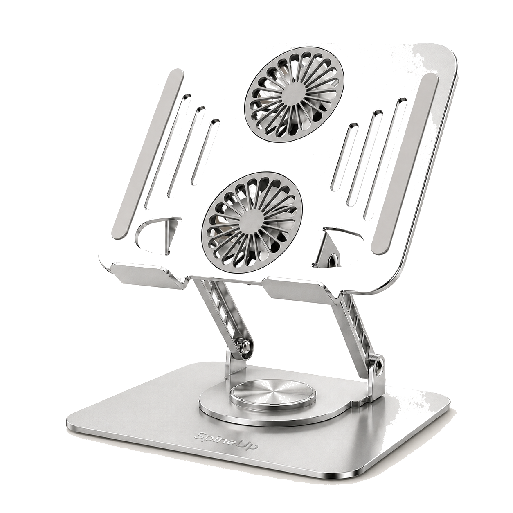
Resumen ejecutivo
SpineUp es una marca uruguaya de soportes para notebook que se encuentra en prelanzamiento. Antes de comenzar a vender, diseñé un sistema para conectar la primera importación con el pricing, el inventario, las ventas, la publicidad y la medición comercial.
Además del modelo comercial y del dashboard en Excel, diseñé y construí con asistencia de IA SpineUp Operations Center, una aplicación local que centraliza la lógica comercial y administrativa. Definí el problema, los procesos, las reglas de negocio, los datos y los indicadores; Claude Code participó en la implementación técnica con React, TypeScript, FastAPI, Python y SQLite.
La operación tuvo un costo landed real de USD 490: USD 128,20 de mercadería y USD 361,80 de servicio integral de importación. Como ese servicio fue contratado de forma consolidada, conservé el costo real y utilicé el peso como criterio provisional para distribuirlo entre Pro y Essential, sin inventar un desglose inexistente.
El resultado actual no es una validación comercial. Es una operación preparada para registrar las primeras ventas con criterios claros, mantener trazabilidad y reemplazar progresivamente los supuestos por información real.
Contexto y desafío
El primer lote incluye 20 SpineUp Pro, un soporte regulable con base giratoria y ventiladores, y 10 SpineUp Essential, una alternativa plegable, liviana y de menor precio.
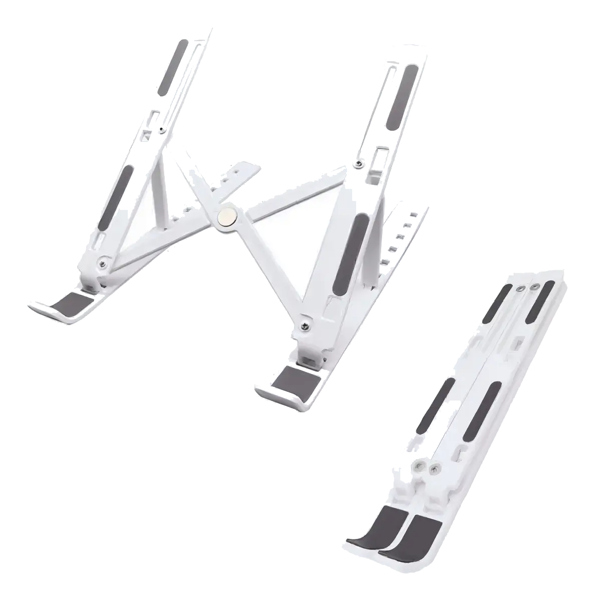
La investigación comercial, la compra, la importación, el desarrollo inicial del e-commerce y la estructura de gestión ya fueron ejecutados. La recepción definitiva, el control de calidad y las primeras ventas todavía están pendientes.
El desafío apareció antes de vender una unidad: necesitaba saber cuánto costaba realmente cada producto, qué contribución podía dejar una venta, qué stock estaba disponible, cómo mantener consistencia entre pedidos y pagos y qué métricas debían registrarse desde la primera visita. Lanzar sin esa estructura podía generar precios mal calculados, inventario inflado, registros duplicados y métricas difíciles de interpretar.
Rol y alcance
Agrupé responsabilidades comerciales, operativas y analíticas dentro de una misma ejecución:
- investigación del mercado y selección de los productos;
- comparación de proveedores, negociación y coordinación de la importación;
- modelado de costos, economía unitaria, pricing e indicadores;
- construcción del e-commerce y preparación de GA4 y Meta Pixel;
- análisis funcional y relevamiento de necesidades operativas;
- definición de procesos, flujos, reglas de negocio y controles;
- modelado funcional de datos para pedidos, inventario, pagos, gastos e importaciones;
- dirección de la construcción de la herramienta con asistencia de IA;
- pruebas, validación y adaptación a la operación real de SpineUp.
Mi aporte no fue asumir un rol de desarrollador profesional. El objetivo fue traducir necesidades comerciales y operativas en una herramienta interna verificable y útil para tomar decisiones.
Cronología
Ocho etapas entre la investigación inicial y el lanzamiento con datos reales. La etapa actual es la validación operativa.
- 01Investigación y productoCompletado
- 02Proveedores e importaciónCompletado
- 03Costos, pricing e inventarioModelado
- 04E-commerce y mediciónPreparado · validación pendiente
- 05Operations CenterAplicación construida
- 06Validación operativaEtapa actual
- 07Integraciones directasPlanificadas
- 08Lanzamiento y datos realesSiguiente ciclo
Tres decisiones comerciales clave
1. Cómo asignar un costo consolidado
La operación tuvo un costo real de USD 490: USD 128,20 de mercadería y USD 361,80 de servicio integral de importación.
El servicio de Artilugio fue contratado y pagado como un importe consolidado. No existía una separación facturada entre flete, tributos, seguro o gestión. Reconstruirla mediante supuestos habría creado una precisión ficticia.
La decisión fue mantener el total real y distribuir provisionalmente el servicio según el peso: 30 kg para Pro y 4 kg para Essential. Con ese criterio, el costo unitario estimado quedó en aproximadamente $869 para Pro y $246 para Essential. El total es un hecho; la distribución por producto es una decisión de gestión, documentada y revisable en futuras importaciones.
2. Cuándo una unidad se considera vendible
Comprar 30 unidades no equivale a tener 30 unidades disponibles.
El sistema diferencia stock esperado, recibido, funcional, físico, reservado y disponible. También contempla muestras, daños, pérdidas, devoluciones y ajustes. El inventario comercial permanecerá pendiente hasta completar la recepción y el control de calidad. Esta decisión evita ofrecer unidades que todavía no fueron verificadas y permite conocer qué ocurrió con cada diferencia de inventario.
3. Qué métricas mostrar antes del lanzamiento
El sistema incluye fórmulas y estructuras para margen de contribución, CAC, conversión, ROAS, rentabilidad y punto de equilibrio, pero todavía no las presenta como resultados comerciales validados.
Sin campañas, sesiones, clientes ni ventas atribuidas suficientes, mostrarlas como cero sería engañoso. Por eso, cuando falta información, los controles utilizan “Sin datos suficientes”. Una fórmula preparada demuestra capacidad de medición; no equivale a una métrica validada.
Sistema comercial construido
El proyecto no depende de una única planilla o aplicación. Es un sistema de decisiones, registros y herramientas que cumplen funciones diferentes y deben mantenerse consistentes.
- Costos y pricing
- Modelar costo landed, comisiones, contribución, escenarios de precio y punto de equilibrio.
- Inventario
- Distinguir unidades esperadas, recibidas, físicas, reservadas, disponibles y vendibles.
- E-commerce
- Preparar catálogo, compra, pagos, envíos y experiencia de usuario para el lanzamiento.
- Publicidad y medición
- Definir eventos, métricas y criterios de lectura para GA4, Meta Pixel y adquisición.
- Operations Center
- Centralizar pedidos, stock, pagos, costos, gastos, importaciones y trazabilidad.
- Decisiones
- Conectar los registros con acciones sobre precio, inventario, seguimiento y validación.
El Excel sigue siendo evidencia del modelo económico y de los controles iniciales. SpineUp Operations Center agrega una capa operativa para centralizar registros, aplicar reglas y conservar trazabilidad.
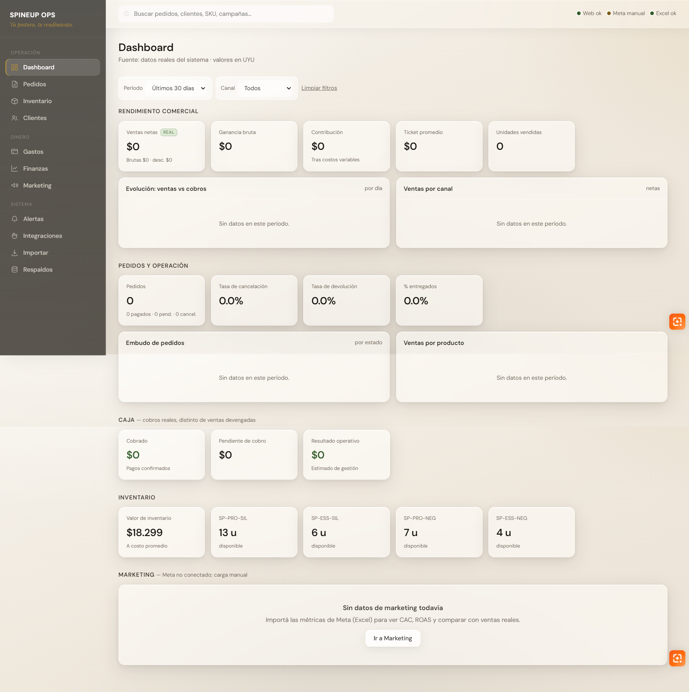
SpineUp Operations Center
Identifiqué que la operación necesitaba algo más que cálculos aislados. Diseñé la lógica funcional y dirigí con asistencia de IA la construcción de una aplicación local para convertir datos dispersos en un flujo operativo controlable.
- Uso
- Herramienta interna local
- Implementación
- Construcción asistida por IA (Claude Code)
- Datos actuales
- Importación validada desde Excel
- Etapa
- Funcional y en validación operativa
Problema operativo
La información estaba distribuida entre Excel, la tienda, la medición publicitaria y registros manuales. Eso dificultaba mantener consistencia entre pedidos, stock, pagos, costos y rentabilidad, y aumentaba el riesgo de duplicados, diferencias de inventario y pérdida de trazabilidad. La necesidad funcional era clara: una única fuente operativa para controlar y decidir.
El problema no provenía de un gran volumen ni de una crisis existente. Era un desafío de preparación, control y escalabilidad operativa: construir una base confiable antes de que las primeras ventas multiplicaran excepciones y registros.
Arquitectura y módulos
La arquitectura actual es local y deliberadamente simple. Separa la interfaz, la lógica, la persistencia y la incorporación validada de información.
Alcance preciso: actualmente no existe sincronización en tiempo real ni integración automática mediante API con WordPress o Meta. La integración directa forma parte del roadmap.
Módulos de la herramienta
- 01Panel de control
Concentrar señales comerciales y operativas para revisar el estado general.
- 02Pedidos
Controlar estados y continuidad del flujo de cada pedido.
- 03Inventario
Distinguir stock físico, reservado y disponible para la venta.
- 04Pagos
Relacionar cobros con pedidos y detectar inconsistencias.
- 05Gastos y costos
Registrar egresos y conservar la historia de costos de la operación.
- 06Rentabilidad
Preparar análisis de contribución y resultado sin confundir cálculos con validación comercial.
- 07Importaciones
Ordenar lotes, costos y trazabilidad del abastecimiento.
- 08Métricas y alertas
Señalar datos faltantes, excepciones y condiciones que requieren revisión.
Reglas de negocio
La evidencia principal no es la tecnología utilizada, sino la lógica comercial y operativa que definí para mantener consistencia.
| # | Regla | Qué garantiza |
|---|---|---|
| 01 | Reserva antes de completar | Un pedido puede reservar stock antes de finalizarse para evitar prometer la misma unidad en dos operaciones. |
| 02 | Disponible ≠ físico | El stock disponible descuenta reservas y unidades no vendibles, aunque sigan existiendo físicamente. |
| 03 | Trazabilidad antes que sobrescritura | Los movimientos y ajustes conservan su historia para explicar cómo cambió una cantidad. |
| 04 | Costos históricos protegidos | Un costo nuevo no reemplaza retroactivamente el costo aplicable a operaciones anteriores. |
| 05 | Importación validada | Los registros provenientes de Excel se revisan antes de incorporarse a la base operativa. |
| 06 | Duplicados detectados antes del alta | Una importación no crea registros repetidos que alteren pedidos, pagos o inventario. |
| 07 | Consistencia entre entidades | Pedidos, pagos e inventario mantienen relaciones coherentes antes de cerrar una operación. |
| 08 | Sin datos suficientes | Una métrica calculable no se muestra como resultado válido si todavía no existe información comercial suficiente. |
Evidencias y capturas
Capturas reales de SpineUp Operations Center en etapa de prelanzamiento. Los módulos ya funcionan con la estructura definida; muchos indicadores muestran cero o “Sin datos” porque todavía no hay ventas ni campañas atribuidas.
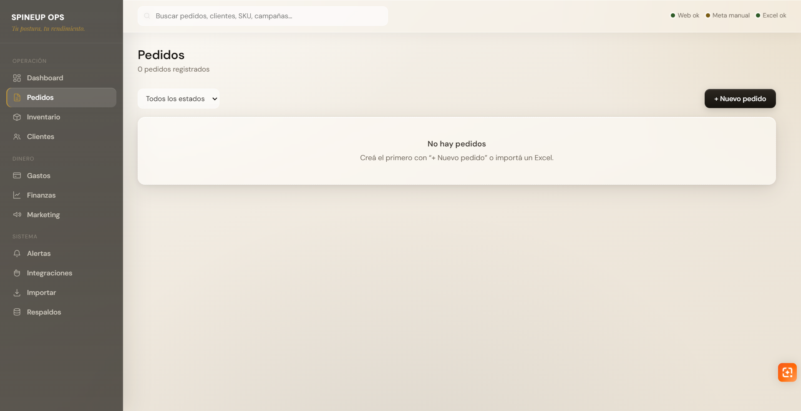
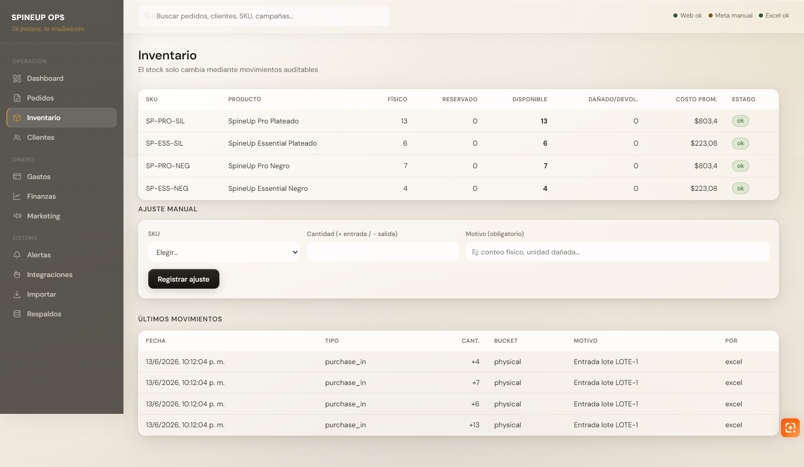
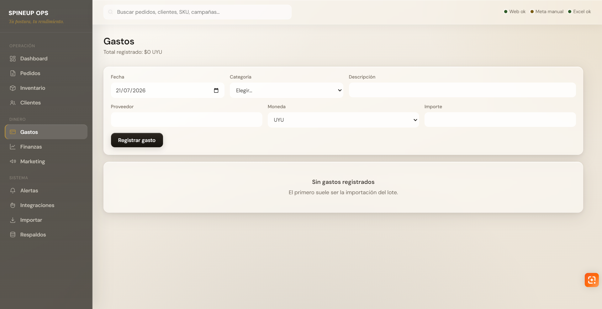
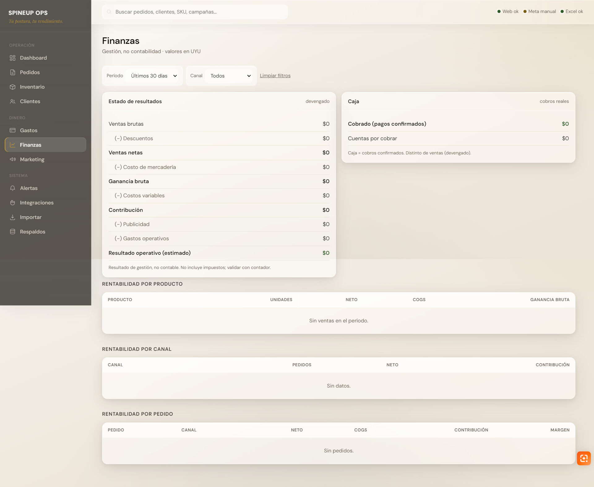
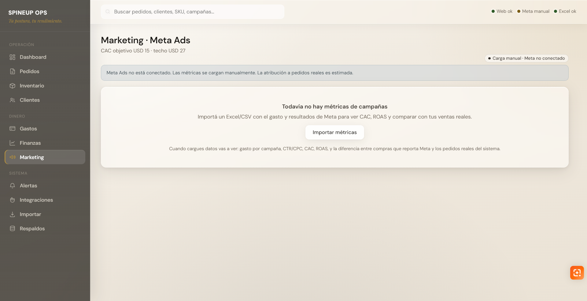
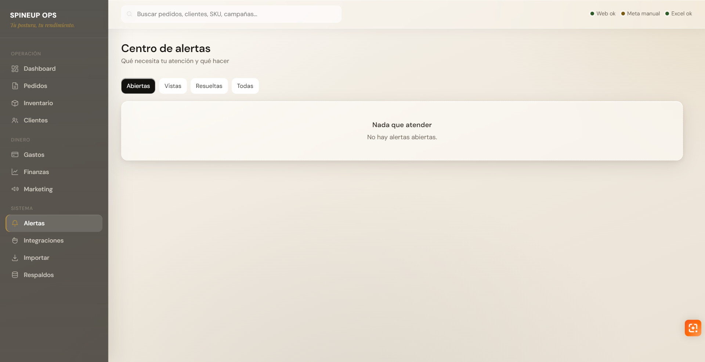
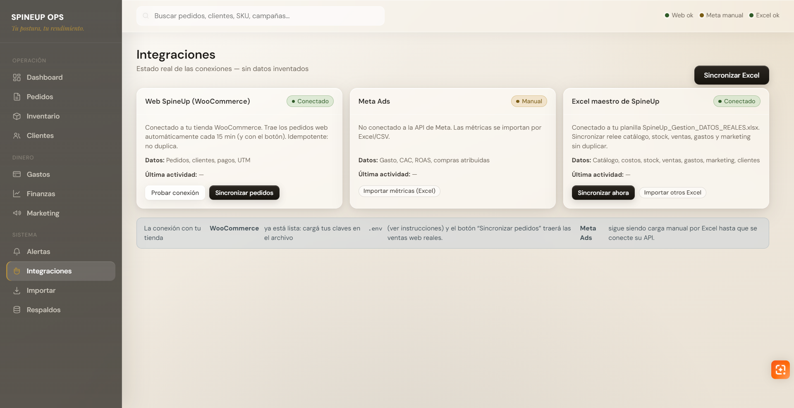
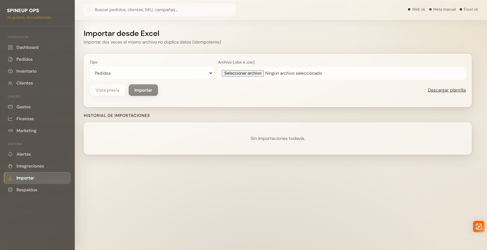
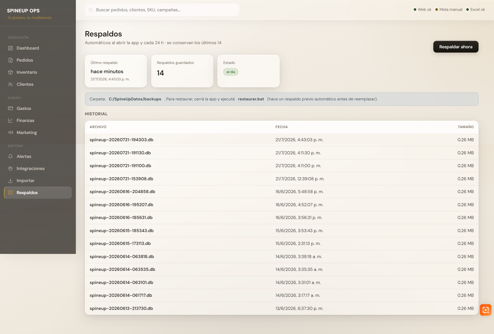
Decisiones técnicas y límites
Cada decisión de diseño priorizó la validación por sobre la infraestructura. Documentar los límites evita convertir una prueba funcional en una promesa exagerada.
- Aplicación local antes que cloud
Motivo: reducir complejidad, costo y dependencia técnica durante la validación.
Trade-off: no ofrece acceso remoto, despliegue público ni uso multiusuario.
- SQLite por simplicidad
Motivo: una base estructurada y suficiente para una operación pequeña y local.
Trade-off: una escala mayor podría requerir otra arquitectura de datos.
- Importar antes que automatizar
Motivo: validar reglas, datos y flujos con una fuente ya disponible antes de conectar sistemas.
Trade-off: la incorporación de información todavía requiere una acción manual controlada.
- Trazabilidad en lugar de sobrescribir
Motivo: poder explicar movimientos, ajustes y cambios de costos.
Trade-off: exige un modelo más disciplinado que editar un valor final.
- Separar métricas calculables de validadas
Motivo: preparar CAC, ROAS, margen y rentabilidad sin presentar supuestos como desempeño real.
Trade-off: algunos paneles muestran “Sin datos suficientes” hasta que exista volumen comercial.
Un alcance acotado también es una decisión. Los límites vigentes son:
- la aplicación funciona de forma local y centrada en la operación de SpineUp;
- la integración directa con WordPress y la importación de métricas de Meta están pendientes;
- no existe sincronización en tiempo real;
- las métricas comerciales todavía no están validadas por volumen real de ventas;
- la herramienta debe continuar probándose con pedidos y movimientos reales;
- la implementación técnica fue realizada con asistencia de IA.
Error detectado y corrección
Durante la revisión del modelo económico apareció una señal extraña: todos los escenarios mostraban contribuciones negativas.
La columna “Otros variables UYU” estaba tomando los precios de lista —$2.590 para Pro y $1.190 para Essential— como si fueran costos variables. El error alteraba la contribución, el CAC máximo, el margen y el punto de equilibrio.
Audité las referencias y corregí las fórmulas para que packaging, entrega y otros variables tomen únicamente sus celdas correspondientes. Como esos importes todavía no están confirmados, permanecen en cero y están identificados como pendientes.
La nueva lógica se validó sin forzar el resultado. Para un Pro vendido a $2.190 mediante Mercado Pago inmediato:
| Precio | $2.190 |
| Comisión | −$160 |
| Costo landed | −$869 |
| Contribución previa | ≈ $1.161 |
Esta contribución es anterior a publicidad, packaging y entrega; no representa beneficio neto.


El aprendizaje fue concreto: un dashboard o una aplicación pueden verse completos y aun así producir decisiones incorrectas si no se valida la lógica que los alimenta.
Resultados actuales
Los resultados son operativos, funcionales y analíticos. SpineUp continúa en prelanzamiento: no se presentan ventas, mejoras porcentuales ni métricas financieras inexistentes.
Lo que el proyecto ya permite
- Conocer el costo real de la operación y estimar costos por producto.
- Calcular economía unitaria con criterios documentados.
- Centralizar la lógica de pedidos, inventario, pagos, costos e importaciones.
- Definir flujos, reglas de negocio e indicadores.
- Importar información desde Excel con validaciones y control de duplicados.
- Conservar trazabilidad de movimientos y costos históricos.
- Preparar análisis de pedidos, stock, gastos y rentabilidad.
- Utilizar una herramienta interna funcional en etapa de validación.
Lo que todavía no demuestra
- Demanda validada.
- Rentabilidad comprobada.
- CAC sostenible.
- ROAS y conversión suficientes.
- Reducción medida de errores o tiempos.
- Escalabilidad comprobada.
- Integración automática con WordPress o Meta.
- Uso multiusuario o despliegue público.
Roadmap
Prioridades ordenadas por evidencia: automatizar e integrar solo los procesos que demuestren una necesidad real.
| # | Estado | Iniciativa |
|---|---|---|
| 00 | Implementado | Base operativa local e importación desde Excel. Arquitectura, módulos, reglas y controles iniciales. |
| 01 | En validación | Probar con pedidos y movimientos reales. Confirmar que los flujos entre pedidos, pagos e inventario se comportan como fueron definidos. |
| 02 | Planificado | Mejorar pruebas, manejo de errores y respaldos. Fortalecer confiabilidad antes de agregar fuentes automáticas. |
| 03 | Planificado | Incorporar pedidos del e-commerce. Integración directa con WordPress cuando la lógica esté validada. |
| 04 | Planificado | Incorporar métricas publicitarias de Meta. Inversión y resultados sin confundir Meta Pixel con una integración de la aplicación. |
| 05 | Planificado | Automatizar conciliaciones y alertas. Reducir controles manuales solo después de confirmar las reglas con casos reales. |
| 06 | Planificado | Reemplazar supuestos por datos reales. Actualizar costos, demanda, adquisición y rentabilidad con ventas suficientes. |
| 07 | A futuro | Evaluar despliegue o versión multiusuario. Solo si el volumen y la operación justifican el costo adicional. |
Conclusión
El mayor aprendizaje fue comprobar que un sistema comercial puede empezar a generar valor antes de la primera venta si traduce incertidumbre en reglas, registros y decisiones verificables.
Preparar costos, inventario, métricas y una herramienta interna no garantiza que el negocio funcione. Sí permite que las primeras ventas produzcan información útil, mantengan trazabilidad y ayuden a decidir qué automatizar después.
Próximos pasos del caso
- Recibir y controlar el lote.Verificar cantidades, estado, funcionamiento y stock vendible.
- Usar la herramienta con registros reales.Validar pedidos, reservas, pagos, movimientos, costos y excepciones.
- Confirmar tracking y lanzar.Comprobar GA4, Meta Pixel y los eventos del embudo sin confundirlos con integraciones de la aplicación.
- Priorizar el roadmap con evidencia.Automatizar e integrar únicamente los procesos que demuestren una necesidad real.
Evidencias descargables
- Descargar dashboard comercial (Excel).
- Descargar versión PDF del caso.
- Arquitectura funcional de SpineUp Operations Center incluida en este caso.
- Capturas previstas del panel, pedidos, inventario, costos, importación desde Excel y métricas.
- Ejemplos de reglas de negocio, controles y validaciones.
- Detalle del pedido de mercadería:
images/pedido-mercaderia.png. - Capturas de economía unitaria antes y después de la corrección.